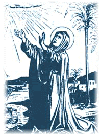
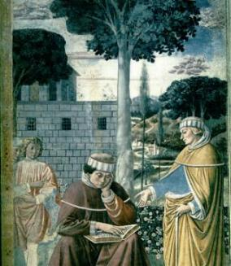
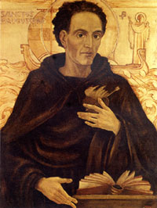

MÔNICA SUA MÃE Nasceu no ano 331 na cidade de Tagaste, província romana da Numídia, atualmente Algéria, na África.
Desde menina-moça revelou um grande amor
a Deus, deixando transparecer 
Estava com 20 anos de idade quando foi dada por seus pais em casamento a Patrício, que fazia parte da Câmara Municipal de Tagaste. Patrício tinha um bom coração, mas era pagão, indiferente a tudo que se relacionasse com religião e tinha uma vida pouco exemplar. Era de temperamento violento. Por motivos banais perdia a tranquilidade e ficava zangado. Sair a cavalo, ir à caça, ostentar a dignidade de decurião nos dias de festas, fiscalizar os escravos e fazer negócios no mercado, consistiam nas suas principais atividades e preocupações. A diferença de idade também era grande, Patrício possuía o dobro da idade de Mônica. Era realmente difícil compreender ou explicar aquela união, uma vez que o gênio e comportamento de cada um, os colocavam em posições diametralmente opostas.
Mas os pais de ambos não pensaram assim, preocuparam-se com a segurança financeira e o destaque que tinham as respectivas famílias na sociedade e por isso, combinaram tudo entre si.
Casaram-se e com a idade de 23 anos nasceu o primeiro filho Aurélio Agostinho, no dia 13 de novembro do ano 354, em Tagaste, hoje Souk Ahrás, na Algéria. O segundo filho foi Navígio e mais tarde teve uma filha chamada Perpétua que se tornou freira.
Embora Mônica criasse os filhos com os mesmos cuidados e carinhos, tinha uma especial predileção por Agostinho.
Foi assim que desde tenra idade, o filho foi-se acostumando com as atenções de sua mãe e a ouvir semanalmente, as noções básicas da Doutrina Cristã.
INFÂNCIA
- Com a idade de 8 anos, um mal súbito investiu violentamente
sobre ele, querendo roubar-lhe a vida. Foi atacado por uma doença 
Naquela época era costume batizar as pessoas depois de crescidas, adultas, suficientemente doutrinadas, possuindo os conhecimentos fundamentais da religião. Contudo era uma emergência, a sua vida extinguia-se no leito de dor. A mãe preocupada pediu à Igreja que lhe administrasse o Sacramento do Batismo.
Às pressas foram feitos todos os preparativos e quando tudo estava pronto para iniciar a cerimônia, sem qualquer explicação científica, a dor cessou e pouco tempo depois, estava completamente curado.
Teria sido um milagre?
Certo é, que em vista do acontecimento, resolveram transferir o batizado, para quando ele tivesse mais idade, seguindo regularmente os costumes estabelecidos.
O menino crescia e sempre revelou grande vivacidade, nos ensinamentos e nas brincadeiras.
No colégio mostrava-se um pouco desatento, sendo por isso castigado pelos professores. Era normal naqueles tempos, castigar os alunos que não apresentavam rendimento mínimo satisfatório .
FORMAÇÃO COLEGIAL
- Com o passar dos anos, seus pais almejando um futuro brilhante para
o filho, decidiram apertar o orçamento 
Contudo, se por um lado a Escola em Madaura ofereceu-lhe uma aprendizagem eficaz e evoluída, por outro, sendo a maioria dos habitantes formada por gente aristocrática, corrupta e pagã, era muito frequente os festins e a orgia desenfreada em honra dos deuses. E isto foi péssimo para o seu caráter em formação. Aquela influência maléfica atingiu-o em cheio, excitando os seus sentidos. Aos 16 anos, estava preocupado quase que exclusivamente com o sexo e a orgia.
Seus pais ficaram assustados com aquela mudança. Tinha que ser tomada uma providência urgente. Com um esforço muito maior, tentaram dar outra direção à vida do filho, para interromperem aquele nostálgico caminho que o estava conduzindo à perdição.
Pensaram em mandá-lo para Cartago, na certeza de que encontrariam um ambiente mais sadio e disciplinado, porque também lá existia excelentes escolas. Mas as despesas em Cartago eram muito maiores e por isso, compreenderam que não seria possível fazer a mudança, apesar de toda economia e boa vontade. Mas sem desanimarem, procuraram um amigo chamado Romaniano, que prontamente emprestou-lhes o necessário, a fim de que pudessem custear os estudos do filho.
Agostinho viajou para Cartago no ano 370 de nossa era, e desde o inicio, aplicou-se com toda disposição aos estudos, ocupando o primeiro lugar na escola.
Os mestres, os colegas de classe e os amigos que lá granjeou, logo previram que bem depressa ele terminaria o curso de Direito e seria um brilhante advogado no Fórum Cartaginês.
Todavia, também em Cartago, apesar de possuir melhores companhias, estava sempre rodeado de muita tentação. Porque a cidade era uma grande metrópole, onde o cristianismo sofria um combate intenso do paganismo e onde dominava os espetáculos e as apresentações de ritos licenciosos , que chamados de artísticos, eram totalmente imorais.